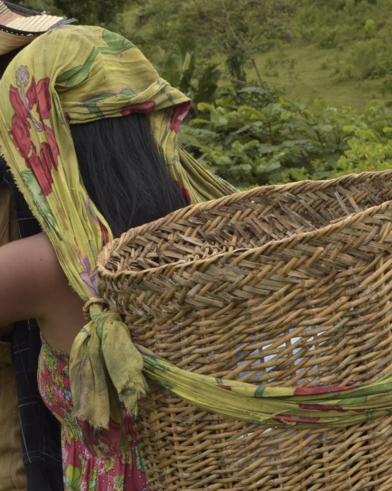
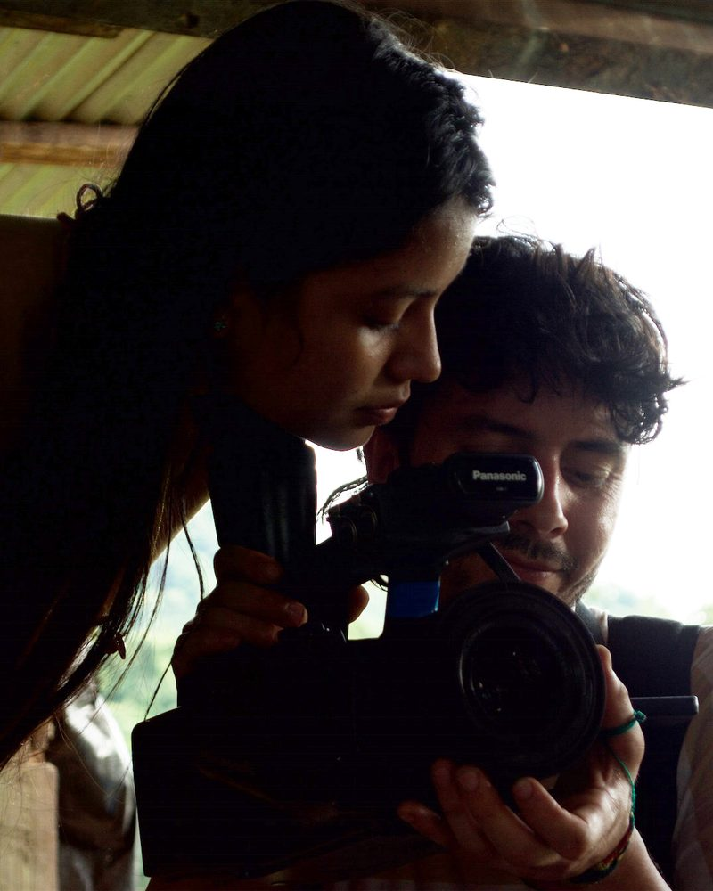
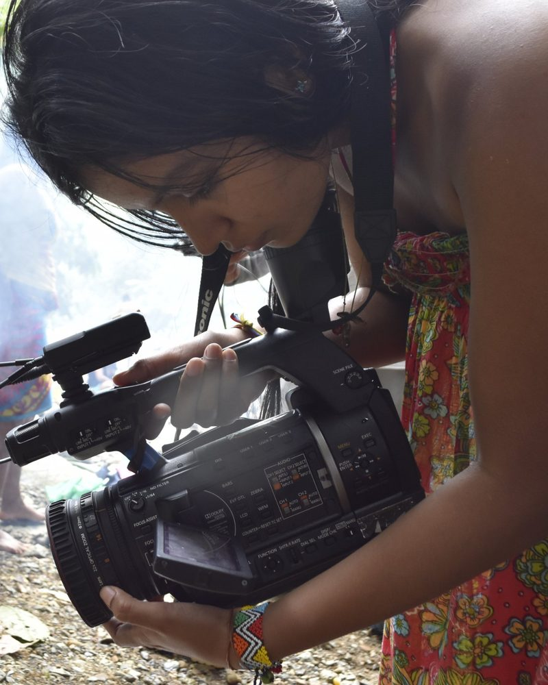
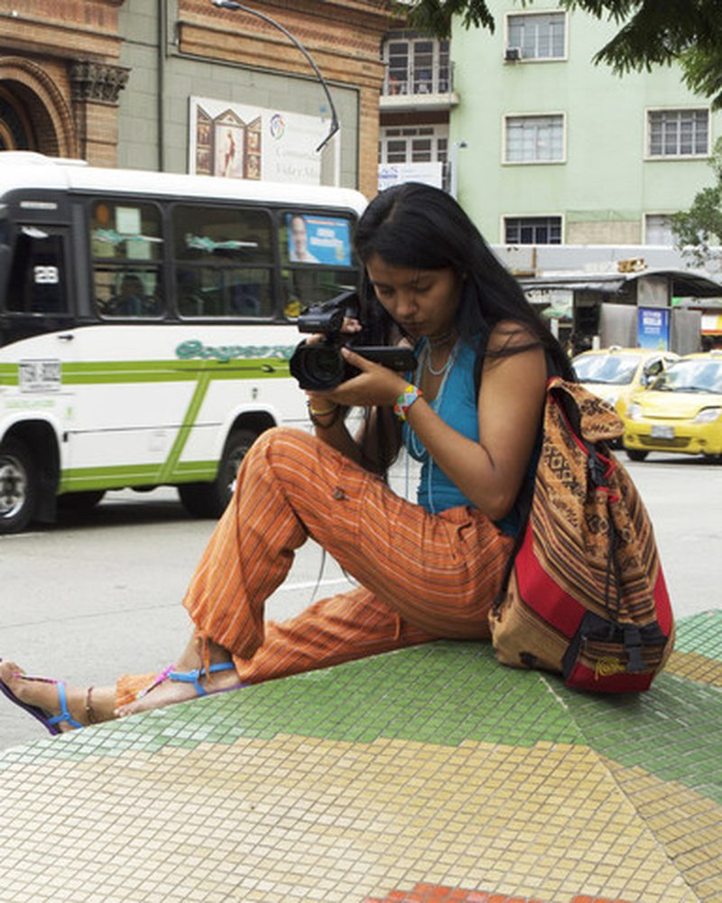
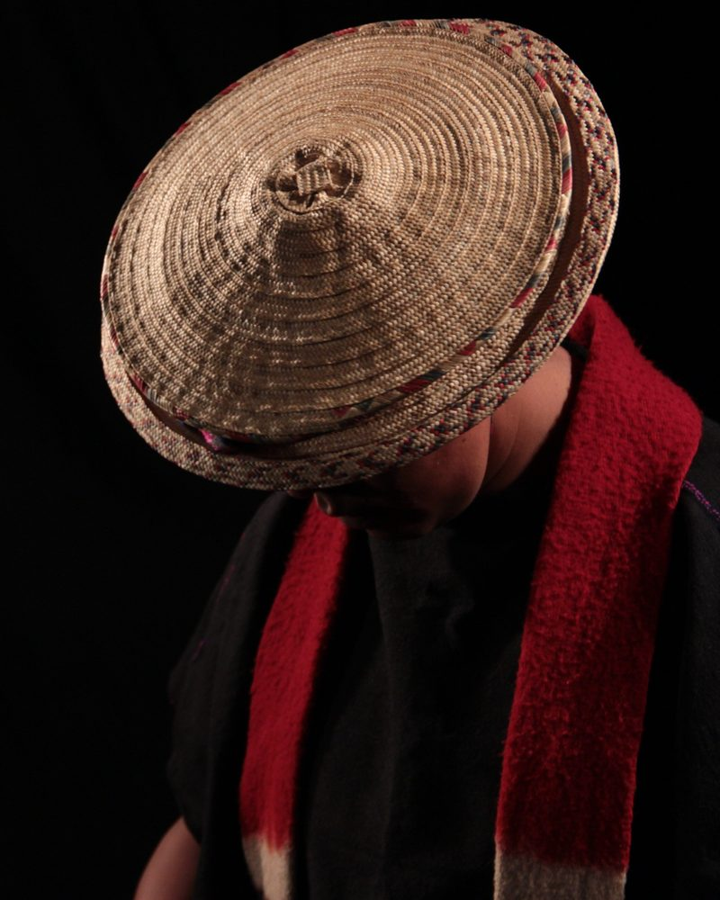
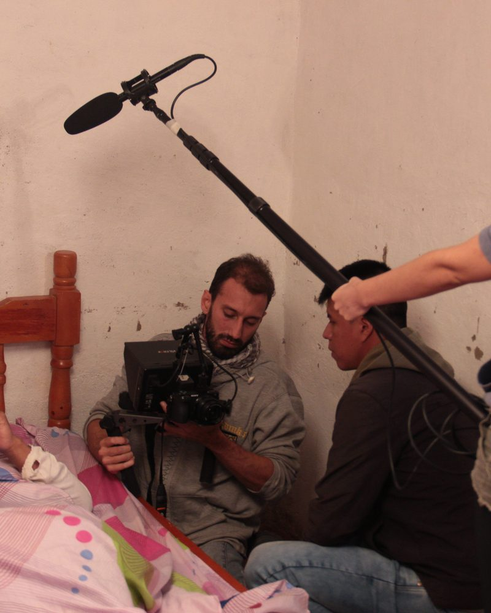
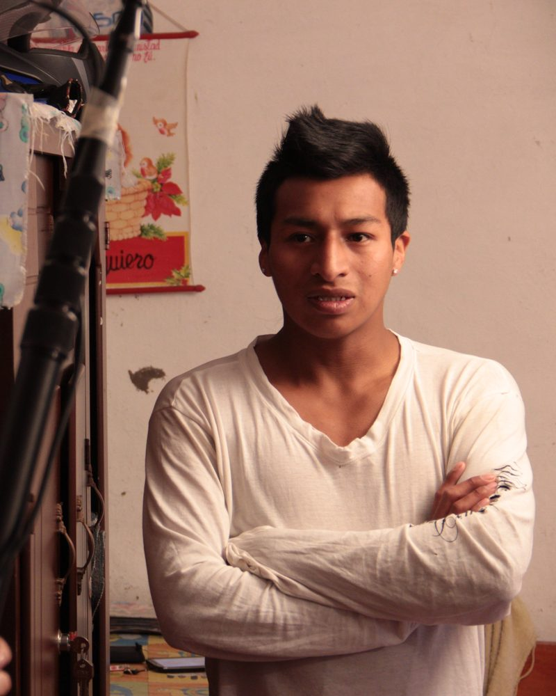
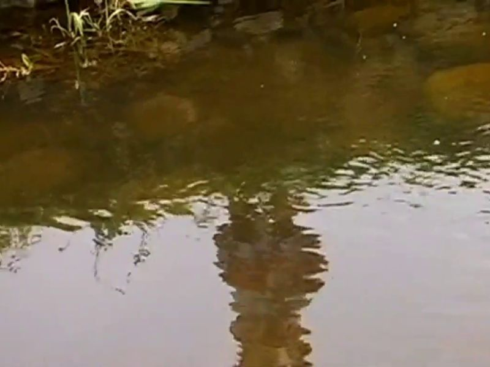
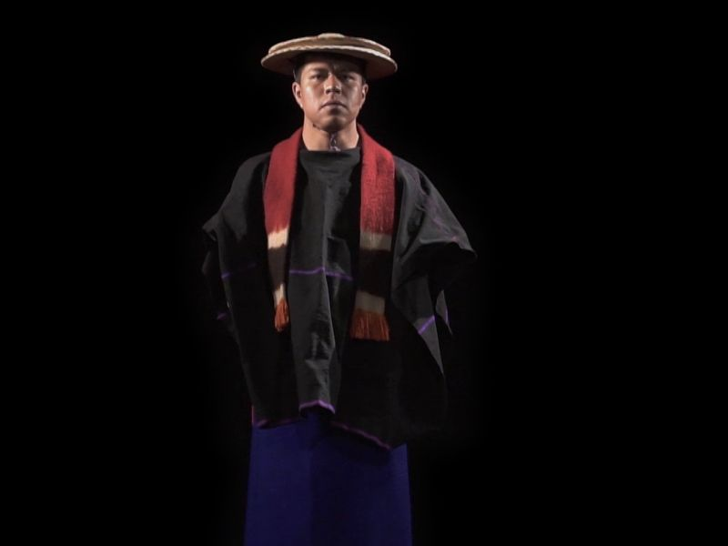

Medellínhilo I
KeratumaMileidy Domicó
Desplazamiento · conflictoSu historia
Escuchar su voz
Desplazamiento, formación y mirada en dos películas y dos cineastas.
«No es un accidente que las cuestiones de la subjetividad hayan resurgido; después de todo, sí importa quién habla o desde dónde escribe.»
Andreas Huyssen (2011)
Durante décadas, el documental tradicional prometió una mirada "imparcial" y "objetiva" sobre el mundo. Pero la verdad no flota en el aire: está encarnada en cuerpos, memorias y miradas específicas
Su historia
Escuchar su voz
Su historia
Escuchar su voz
La crisis de los metarelatos (El nacimiento de las micropolíticas).
En los años sesenta, las grandes promesas de la modernidad (el progreso indefinido y las revoluciones centralizadas) entraron en crisis. De las grietas de esa incertidumbre no surgieron verdades dominantes, sino las micronarrativas de minorías, migrantes y pueblos originarios que reclamaron su propio derecho a narrarse.
Desliza la línea: de la mirada desde afuera a la voz desde adentro
Hacer cine autobiográfico no es un acto de egocentrismo; es una búsqueda de reparación íntima y social. Para construir un pacto de honestidad con el espectador, los cineastas apelan a la memoria afectiva, comunitaria, familiar.







Sobre todo aparece el cine de lo real en primera persona: sujetos colectivos que se piensan en singular.
Y en ese punto deciden mirar hacia dentro.
En la realización del cine indígena, la primera persona se conjugó inicialmente en plural: un estruendoso Nosotros. Aquí la cámara se domesticó para convertirse en un instrumento colectivo al servicio de la defensa del territorio, la denuncia, la comunicación con el otro, la preservación de la lengua y la memoria histórica.
El punto desde donde se enuncia. Todo lo demás pasa por aquí.
Cuando las y los jóvenes realizadores indígenas migran, son desplazados a las urbes o ingresan a la academia, surge la primera persona del singular (Yo). Ya no filman solo la agenda comunitaria, sino sus propias contradicciones: el racismo urbano, el aislamiento, la identidad de género, los relatos generacionales, la experiencia de la violencia, la necesidad del retorno y el choque entre tradición y modernidad.
«Enunciadas desde un locus migrante, estas obras abordan el racismo, la desterritorialización, la re-territorialización y la negociación entre lo propio y lo ajeno.»
[Autor, año]
Qué significa filmar para volver a un lugar del que se tuvo que salir
Cada película abre tres puertas.


Deja una reflexión. Para escribir necesitas una cuenta de GitHub.
Elige una pregunta